Gill James ᑕᐣᓯ
Why the current build fails on a phone
- One surface, too many meanings. On the home water, a tap could dive or open a water name, a drag could scroll or swipe-dive, a pinch zoomed the page, and the player had pull-down-to-close. Each gesture needed a guard (10 px tap thresholds, multi-touch timers, zoom checks, a 1.5 s swipe window). On a real phone those guards decide differently than you expect, so taps and swipes “do the wrong thing”.
- Five routes to the same five places. Water names, sky constellations, the tab bar, the breadcrumb and the ≡ list all lead to film, photo, objects, sound and about, each with its own positions and wording. Two worlds (water and sky) duplicate the menu, so there is no single picture of where you are, and the navigation idea doesn’t hold.
- Labels placed by hand on a free canvas. Constellation and water-name positions are fixed coordinates per orientation, with per-device nudges and runtime packing around the poem. Each new screen size produced a new collision, and each QA round patched the last one. That is the “jumbled, overlapping” layout.
- Stacked layers. Live water, reflection links, poem scrim, hints, top bar, dock and list panel sit on top of each other. Half-visible layers caught taps, and on a landscape phone the fixed bars take a third of the height.
- Pinch didn’t mean anything. On home, pinch was plain browser zoom (bigger pixels, no new information), and in the sky it was a separate fly mode. The gesture Gill actually wants never led anywhere.
- Our tests checked geometry, not intent. More than 300 emulator checks passed (sizes, contrast, hit tests) while the real phone still felt broken. Next time, Gill’s Galaxy S24 and a real iPhone get tested by hand before Gill sees anything.
Shared zoom grammar (from C-10 “Pinch to see more”)
All three concepts use the same four snap levels and the same gestures. Only the spatial metaphor and the look change. Reference: semantic-zoom sketch.
| Level | URL | What it adds (Film as the example) |
|---|---|---|
| L0 | / | The five chapters, under the moon, the name and the whole poem |
| L1 | /all/ | Counts and project names (35 films: 22 commercial · 7 music video · 3 brand film) |
| L2 | /film/ | 12 frames with title · type · length (no years: the site data has none) |
| L3 | /film/#play=4 | One work: frames, title, type, length; caption and credits stay [Gill writes] until supplied. ▶ opens the Scope 2.39 player. |
| Gesture | Means exactly one thing |
|---|---|
| Pinch out (spread) | One level in, anchored on what is under your fingers; snaps to a level, never in between |
| Pinch in | One level out |
| Tap an item | One level into that item (same as pinching out on it). A tap on blank space does nothing. |
| + / − (48 px) and ●○○○ | The same as a pinch, for anyone who doesn’t pinch. The dots and the URL show the level. |
| One-finger drag or scroll | Move. Never zoom, never dive. |
| Moon (top left) | Home, L0, from anywhere |
| Back | One level out (every level has a real URL) |
| list | A plain, natively scrolling page of the current level (also the JS-off and reduced-motion version) |
| Tab bar (always on) | Jump to a chapter at L2 |
Removed: swipe-to-dive, blank-water dive, pull-down-to-close and water names as links. Label rule: every label has a reserved slot at every level, and an item without room shows as a dot until you zoom in. Labels never shrink to fit and never overlap. All targets are 44 px or more.
1 numbered gestures on each frame match its listyellow rings = tap · paired circles with arrows = pinch · dashed arrow = drag or scroll
A · Star Atlas The sky is the map.
- Under the poem, the five chapters glow as constellations reflected in the water.
- Pinch into the sky (or tap, or +) and each constellation gains counts and project names; pinch into Film and its 12 stars turn into frames on the same lines; one more step opens a single work.
- Drag pans the night sky; ᑕᐣᓯ sits at the centre; pinching back out climbs one level at a time to the moon.
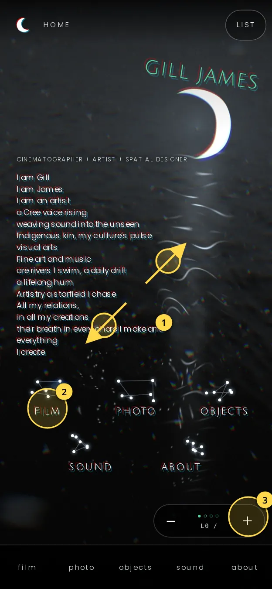
- Pinch out (spread) anywhere → L1, the sky. The poem melts as the camera rises.
- Tap a constellation (≥100×64) → straight into that chapter at L1, centred on it.
- + does the same as pinch out. ●○○○ shows L0.
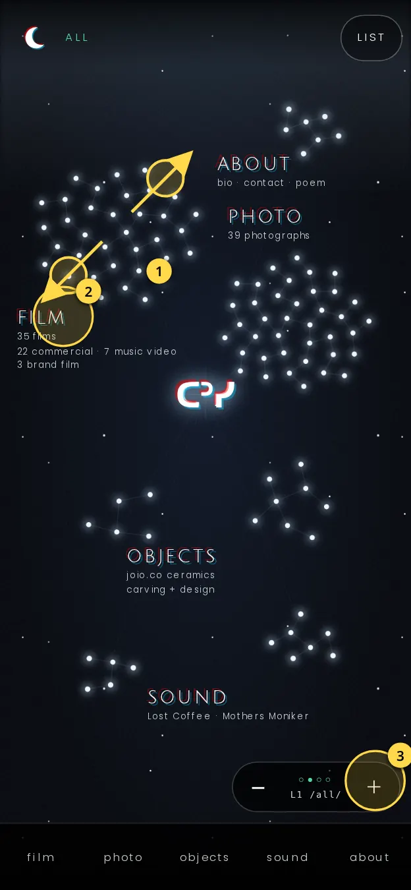
- Pinch out on Film → L2 for Film. Zoom is anchored where your fingers are.
- Tap “film” → the same as pinching out on it.
- + / − step a level; one-finger drag pans the sky.
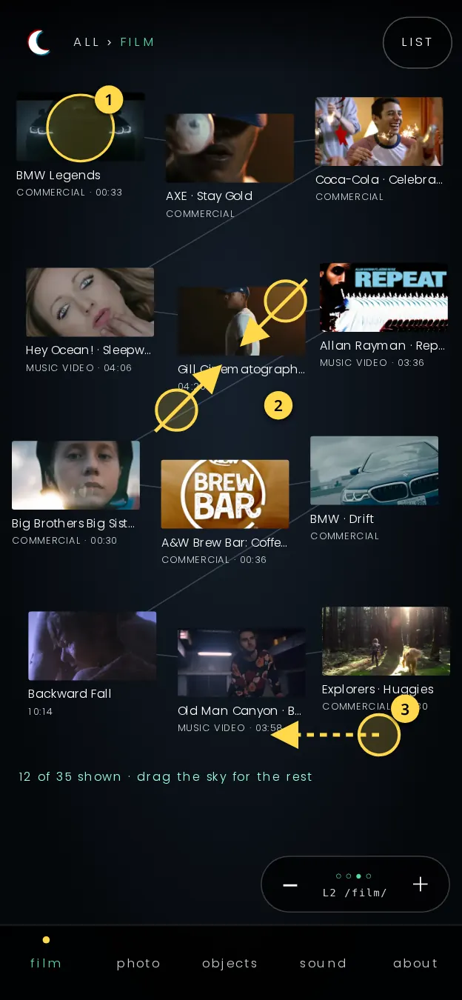
- Tap a frame → L3 for that work.
- Pinch in (fingers together) → back to L1.
- Drag pans to the other 23 films; labels are slots, so they can’t overlap.
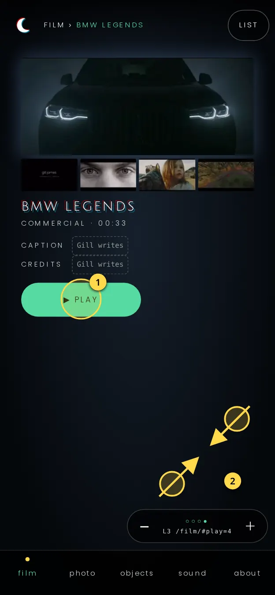
- ▶ play → Scope 2.39 player.
- Pinch in or − → back to the 12 frames, same position.
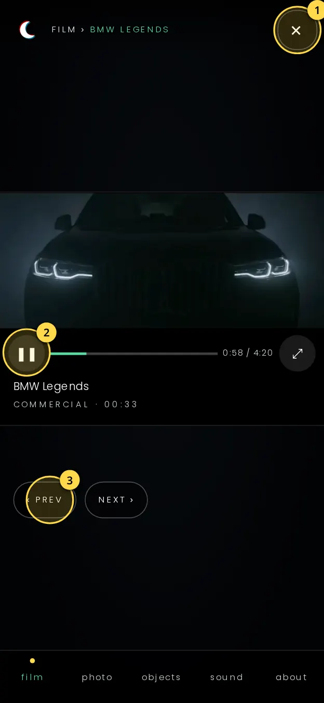
- ✕ (or Back) → L3.
- Play/pause, ⤢ full screen.
- ‹ prev / next › → neighbouring film. No swipe gestures on the player.
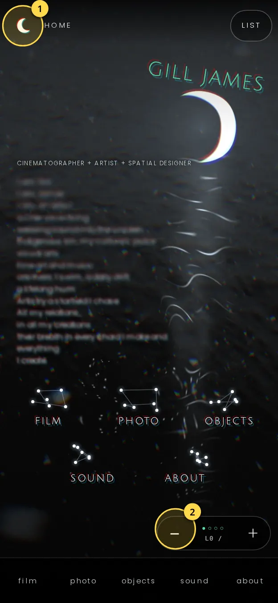
- Moon (top left) → L0 from anywhere, in one tap.
- − steps out one level at a time.
Risks
- Free-placed constellations are exactly what broke the last build: names collided on every new screen size. Labels would need computed, collision-checked slots at every level, not hand nudges.
- The sky needs its own two-finger pan and pinch engine (touch-action:none), so browser zoom is captured there. That is the riskiest code on iOS Safari.
- At L2 the 12 frames are smaller and less even than a grid, and landscape needs a second sky layout.
- The most magical of the three, with the highest build risk.
B · Moonwater Wall Everything at once, then closer.
- Under the poem, five glowing panes of work float on the water (film, photo, objects, sound, about).
- Pinch in and the panes become a wall: five districts, each a mosaic of its own images with counts and project names; pinch into Film for a dense 3×4 grid of frames, then one work.
- Drag slides along the wall to the neighbouring district. The densest concept, and the closest to Gill’s “show me many images at once”.
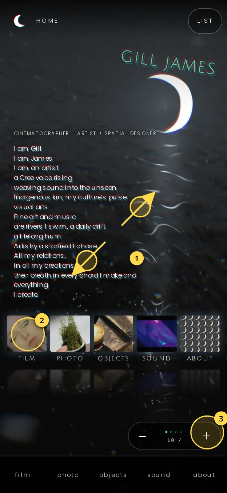
- Pinch out anywhere → L1, the wall. The poem melts.
- Tap a pane → that district at L1.
- + = pinch out. ●○○○ = L0.
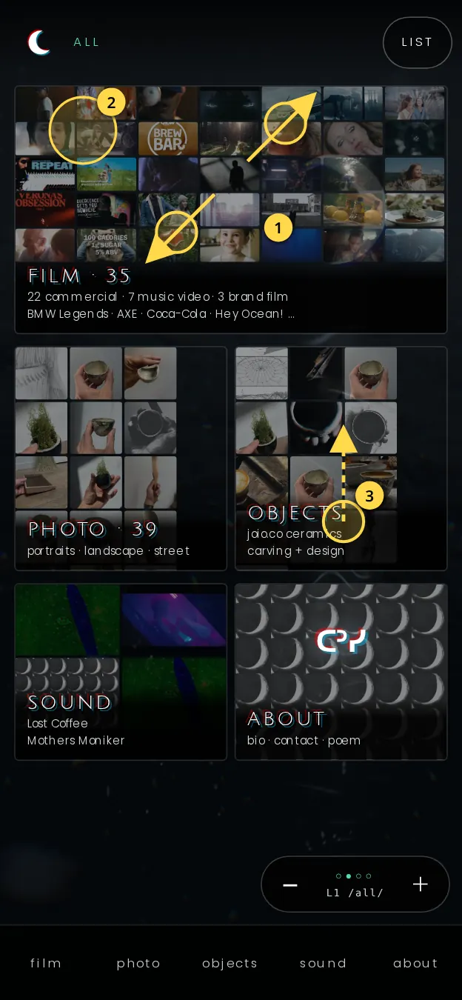
- Pinch out on Film → L2 Film.
- Tap a district → the same.
- Drag → move along the wall.
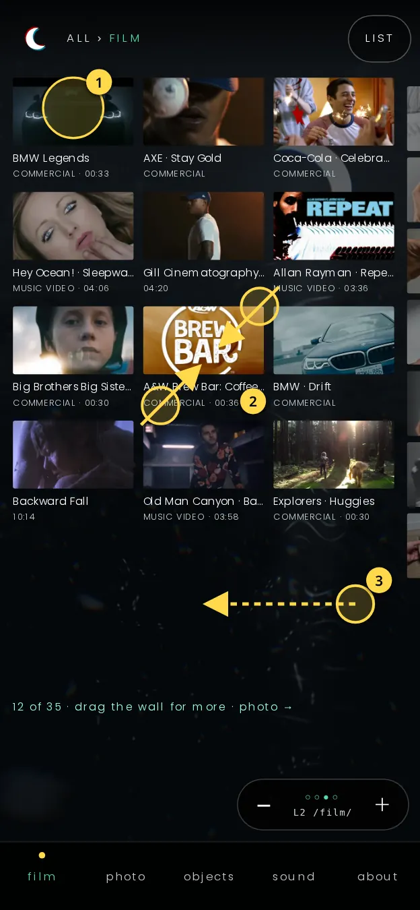
- Tap a frame → L3.
- Pinch in → back to the districts.
- Drag sideways → photo district, at the same level.
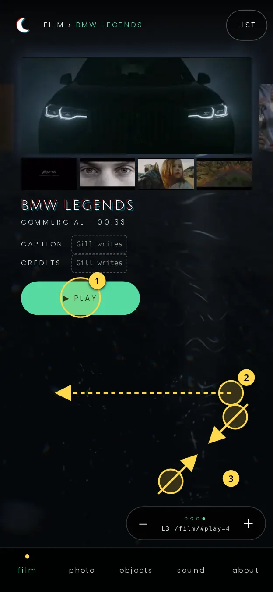
- ▶ play → Scope.
- Drag sideways → next or previous work at L3.
- Pinch in / − → the grid.
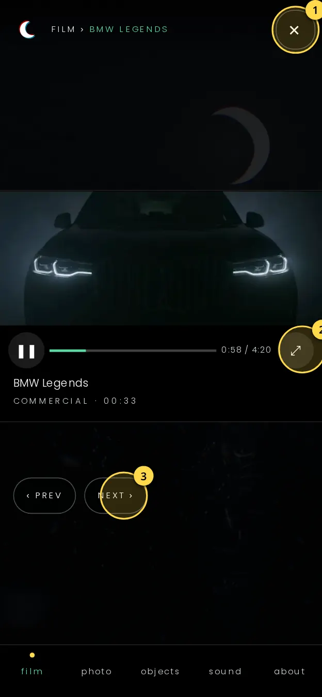
- ✕ / Back → L3.
- ⤢ full screen (Android turns the picture sideways).
- ‹ prev / next ›.
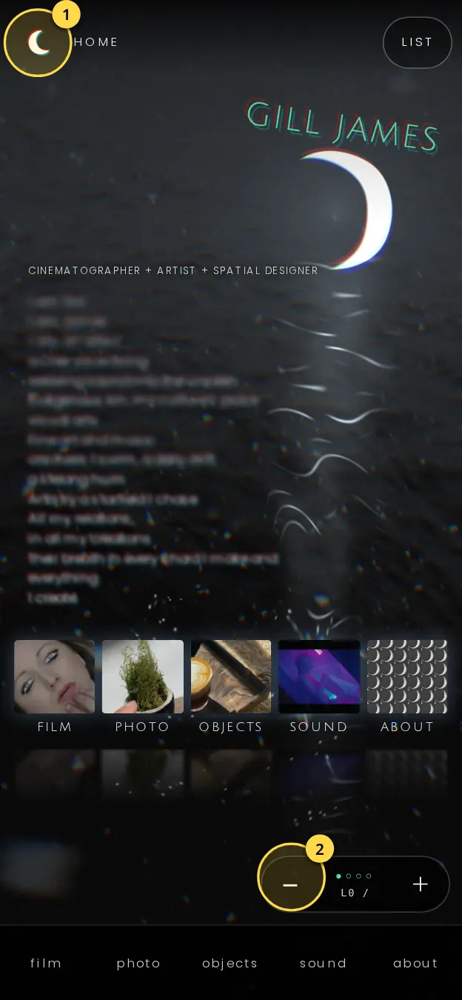
- Moon → L0.
- − → one level out.
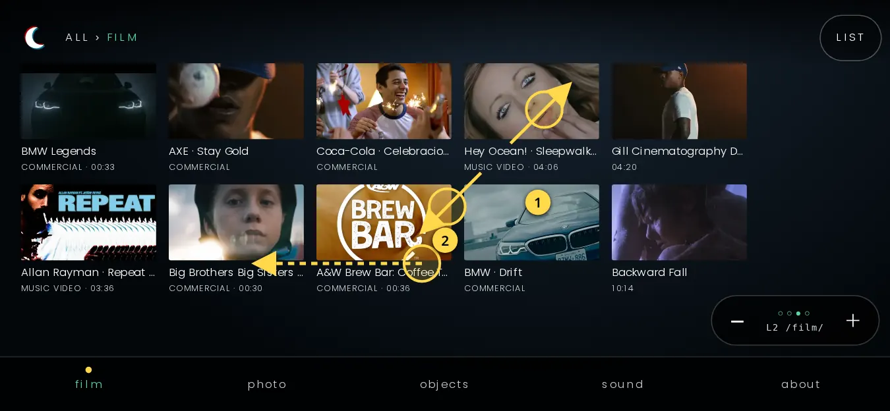
Risks
- It also needs a custom 2D pan and pinch engine (the same class of bugs as A), plus edge drags that can fight the iOS back swipe.
- Image weight: the L1 mosaic shows about 80 images, so it needs a tiny sprite sheet (about 60 KB) and real thumbs only at L2 and deeper.
- Water shows less here; it is a gallery on water rather than a world. The grid makes overlaps structurally impossible, which is its big strength.
C · The Dive Scroll sinks. Pinch reveals.
- Under the poem, one column of five chapters begins just beneath the surface. Native scroll sinks you down it, and the poem melts as you go under.
- Pinch, a tap or + adds detail in place: the chapters gain counts and project names, Film opens into its 12-frame grid, then into one work, and nothing moves sideways.
- Scroll up to surface; the poem re-forms. At the very bottom the column rises into the star sky, where pinch-to-fly stays as a pure delight.
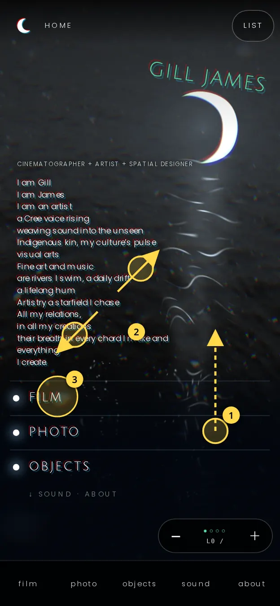
- Scroll ↓ (native) → sink: the poem melts and the chapters come up.
- Pinch out / + → L1 in place.
- Tap “film” → straight to Film at L1.
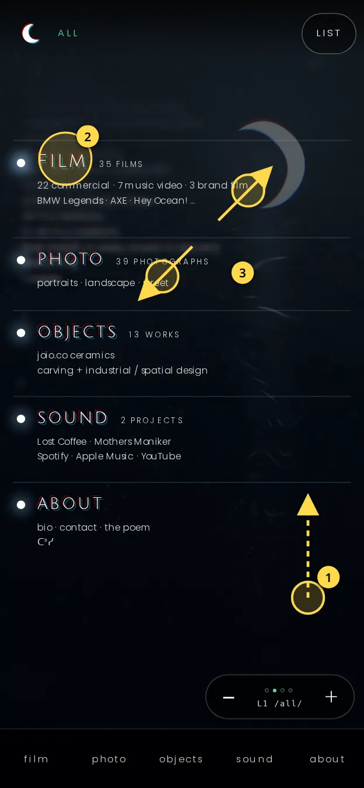
- Scroll → move through chapters (native, never hijacked).
- Tap “film” → L2 opens in place.
- Pinch out over Film → the same.
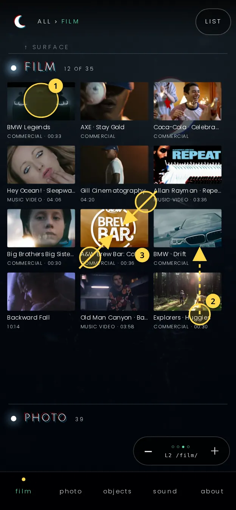
- Tap a frame → L3.
- Scroll → more films, then photo.
- Pinch in → Film folds back to L1.
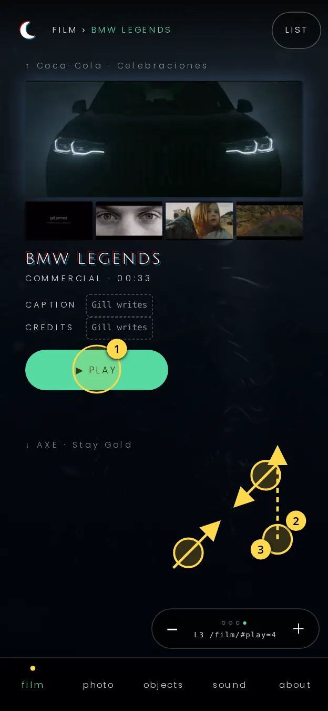
- ▶ play → Scope.
- Scroll → next work.
- Pinch in / − → the 12 frames.
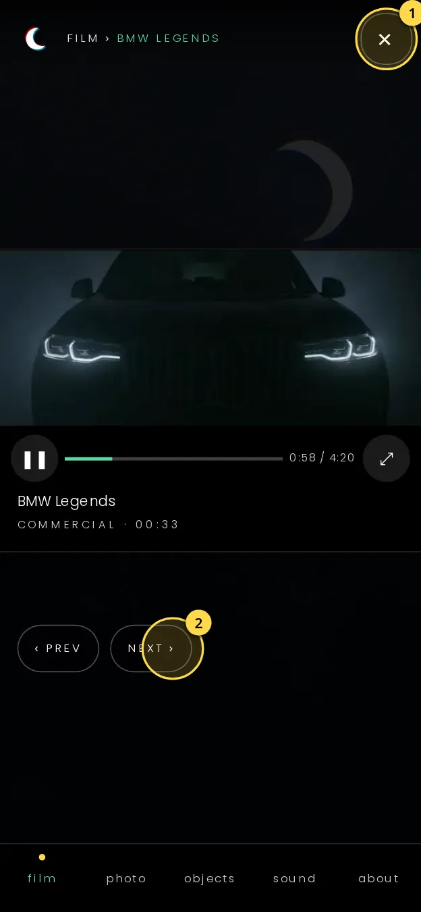
- ✕ / Back → L3.
- ‹ prev / next ›.
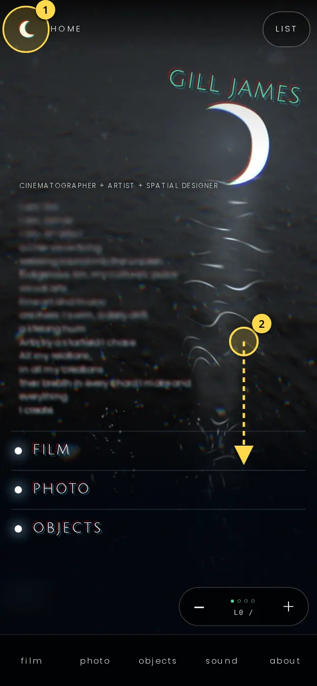
- Moon → L0.
- Scroll ↑ → rises through the levels and back to the surface.
Risks
- Least map-like: the zoom expands in place, so it could read as an accordion list. The water depth, glints, poem melt and the star sky at the bottom have to carry the magic.
- Pinch must be captured over the column (touch-action:pan-y) while vertical scroll stays native; browser zoom is replaced by level zoom there (the plain list page keeps browser zoom).
- Lowest build risk: it uses native scroll, a single column (labels can’t collide), the same layout in landscape, and degrades to plain pages with JS off. It is C-10’s vertical sketch with Gill’s world on top.
Recommendation
Build C · The Dive, and take the best of the other two:
- From B: the dense 12-frame grid at L2 (and photo’s grid of images), so Gill sees many images at once.
- From A: the constellations. The column ends by rising into the star sky, with ᑕᐣᓯ at the centre and pinch-to-fly there as pure delight, never the required path.
Why C: scroll stays the browser’s own scroll, and pinch, a tap and + all mean “show more”, so no gesture needs a guard. A single column means labels physically can’t overlap, in portrait or landscape. It degrades to the same URLs as plain pages. And it keeps what Gill likes: the live water, the moon, the poem melting as you go under, and the Scope player.
Why not A: it is the most magical, but it repeats the free-canvas label placement and the custom gesture engine that broke this build. Why not B: it has the right density, but it needs the same custom 2D pan, and the water becomes a backdrop.
| A · Star Atlas | B · Moonwater Wall | C · The Dive | |
|---|---|---|---|
| Movement | Custom 2D pan | Custom 2D pan | Native vertical scroll |
| Labels can’t overlap because | Computed slots (hard) | Grid cells | Single column |
| Density (Gill’s ask) | Medium | Highest | High at L2 |
| Magic | Highest | Medium | Medium-high (depth, melt, sky finale) |
| Build risk on a real phone | High | Medium-high | Low |
Gill decides
- Which concept to build: A, B or C (C recommended).
- Years for the L2 film frames: the data has none, so L2 shows type · length until Gill supplies them.
- Caption and credits per work for L3: they show [Gill writes] until then.
Frames are drawn at 390×844 using the real water, moon, name, poem, film stills, titles, types and lengths from the v2 build. Landscape frame at 844×390. Sketch only, nothing built.